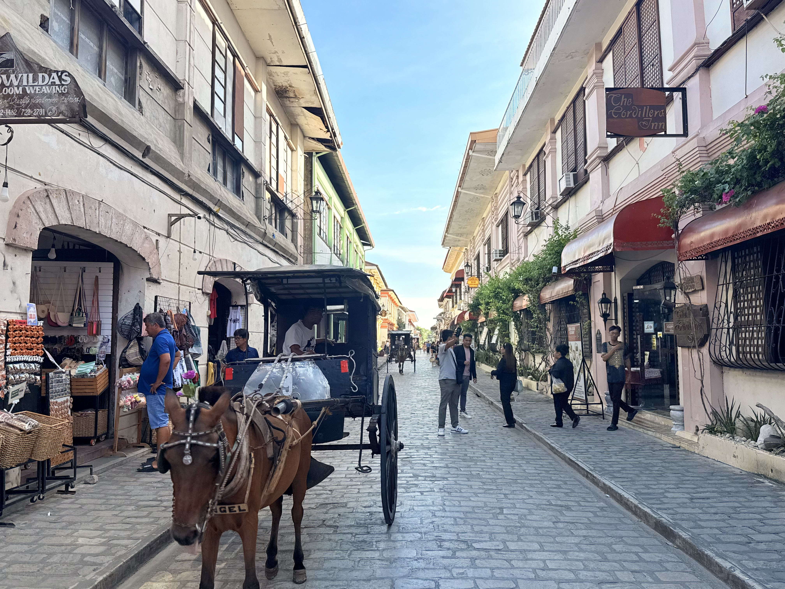
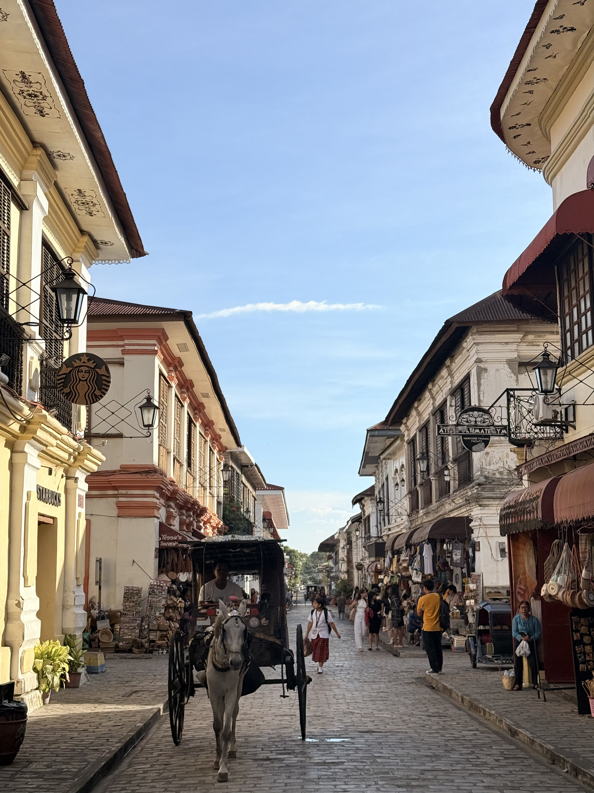

HistoricIconic heritage street
Calle Crisologo
This is Vigan's most iconic street, lined with ancestral houses from the Spanish colonial era. Take a walk or a kalesa ride, especially when the street lamps create a warm vintage glow.
History & trivia
The houses are famous for bahay na bato architecture, combining stone ground floors and wooden upper floors with capiz-shell windows.